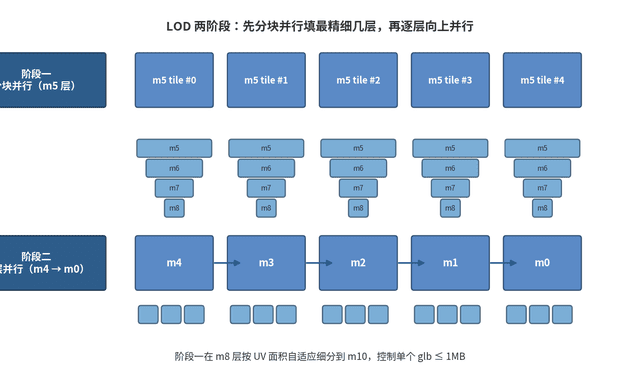
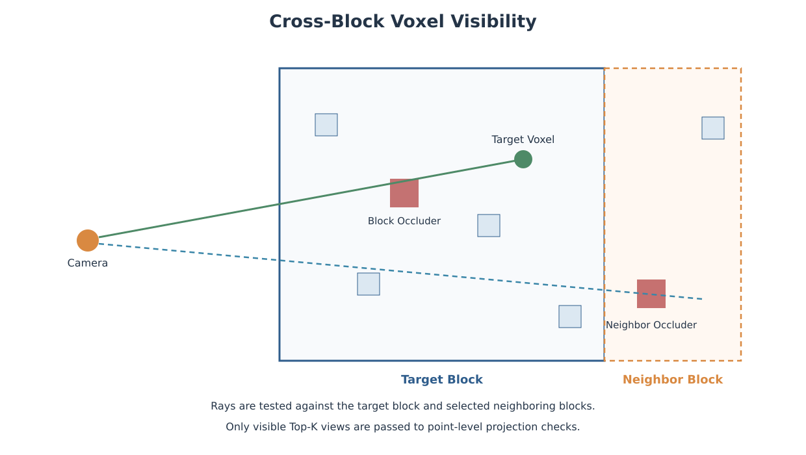
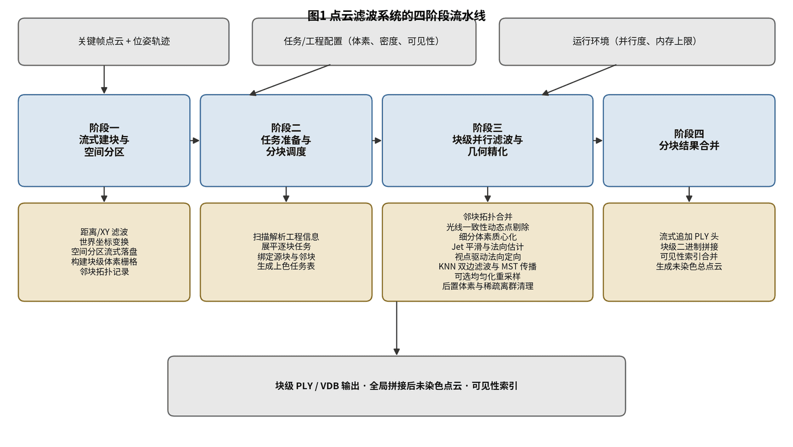
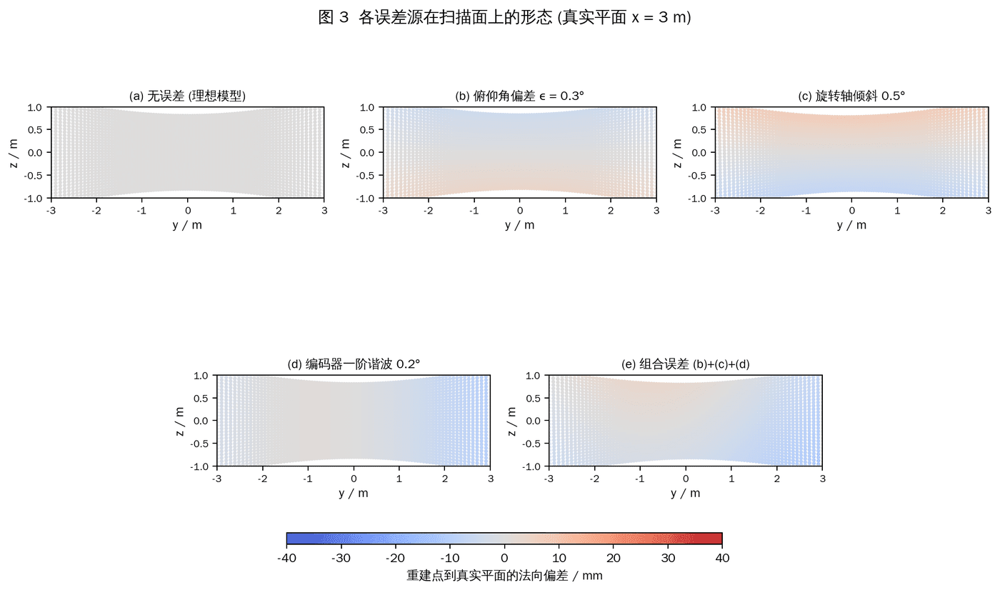
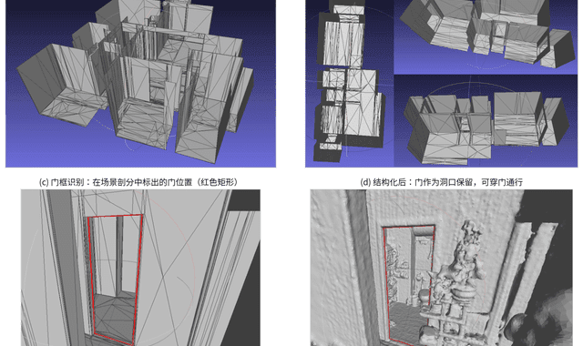
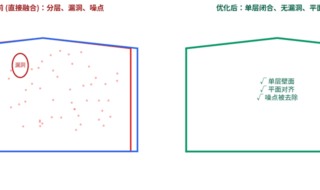
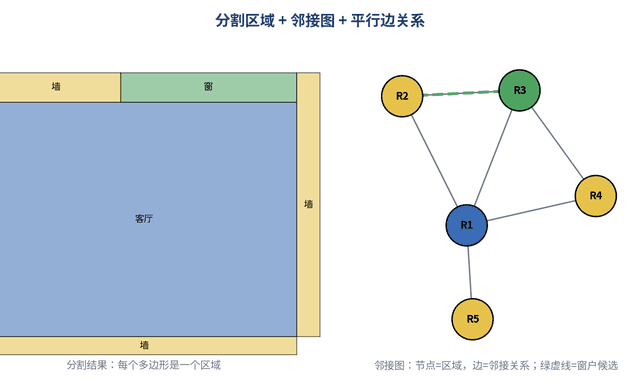
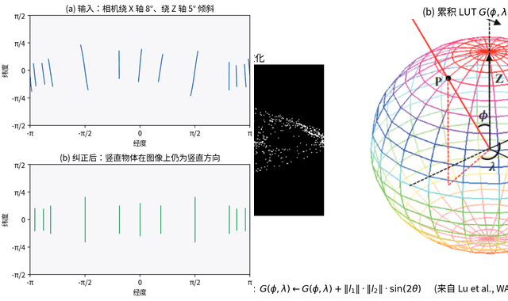

Reconstruction
SfM, MVS, SLAM, bundle adjustment, panoramic geometry, aerial and indoor reconstruction.
Lead of 3D Reconstruction at Realsee.
I am Lead of 3D Reconstruction at Realsee (realsee.com), working across photogrammetry, multi-view geometry, point clouds, meshes, and production reconstruction systems.
My work combines algorithm design, C++/CUDA implementation, validation, and performance optimization, with an emphasis on large real-world scenes and reliable engineering delivery.
我目前就职于如视（realsee.com），负责三维重建方向，长期从事 SfM/MVS、SLAM、点云、网格、纹理与大规模重建系统研发。
工作覆盖算法设计、工程实现、性能优化和质量验证，关注真实业务场景中的精度、效率、稳定性与可交付性。
SfM, MVS, SLAM, bundle adjustment, panoramic geometry, aerial and indoor reconstruction.
Point-cloud filtering, registration, mesh reconstruction, structural modeling, and texture mapping.
Large-scene tiling, parallel pipelines, memory-bounded processing, LOD, and browser delivery.
C++/CUDA implementation, numerical validation, performance profiling, and reconstruction quality evaluation.
Project scope, contribution, and technical stack

Built the indoor large-scene reconstruction system behind station-scanned spaces such as Realsee VR house tours, museums, and large venue digitization.
Tech: C++, point clouds, mesh reconstruction, topology repair, texture optimization, LOD, Docker

Developed a direct colorization pipeline for large sparse point clouds, mapping calibrated multi-view images onto LiDAR geometry while controlling visibility, view selection, and color seams.
Tech: C++, OpenVDB, point clouds, ray visibility, multi-view projection, Delaunay graph, conjugate gradient

Built a production point-cloud filtering and geometric refinement pipeline for handheld laser scanning, turning raw keyframe clouds into clean global point clouds for downstream reconstruction.
Tech: C++, OpenVDB, handheld LiDAR, ray traversal, normal estimation, bilateral filtering, Poisson-disk sampling

Designed a calibration workflow for station-based scanning and mobile handheld laser scanners, focusing on practical error sources and the path from diagnosis to validation.
Tech: LiDAR calibration, camera-LiDAR extrinsics, error simulation, nonlinear optimization, calibration-field design

Designed a geometry pipeline that recovers room structure from a given indoor mesh and reconstructs a regularized structural mesh.
Tech: C++, mesh processing, cell complex, visibility, graph cut, structural reconstruction

Refined monocular depth estimation outputs from panoramic imagery into more stable point-cloud and mesh geometry for downstream reconstruction pipelines.
Tech: monocular depth estimation, pose BA, point-cloud fusion, mesh cleanup

Designed an automatic DXF/DWG parser to convert non-standard manually drawn CAD floorplans into a unified structured floorplan representation.
Tech: DXF/DWG, computational geometry, triangulation, region graph, door/window recognition, floorplan JSON

Developed panorama preprocessing modules for gravity alignment and Manhattan direction estimation before reconstruction and spatial understanding.
Tech: equirectangular panoramas, spherical LUT, vanishing points, gravity rectification, RANSAC

Built an automated building reconstruction pipeline from airborne LiDAR point clouds, turning classified building observations into vectorized 3D models with reconstructed roof structure.
Tech: airborne LiDAR, point-cloud classification, roof segmentation, topology modeling, vector reconstruction, texture mapping
Open tools and engineering outputs
Command-line SfM pipeline for aerial triangulation and practical reconstruction workflows.
C++ · SfM · MVS Code / DocumentationHigh-speed dense matching software focused on MVS performance and reconstruction quality.
C++ · CUDA · MVS Project / DocumentationAirborne LiDAR ground filtering tool using progressive TIN densification and block processing.
C++ · LiDAR · TIN Project / DocumentationLead of 3D Reconstruction
realsee.com · Beijing
3D Reconstruction Algorithm Engineer
Feima Robotics (飞马机器人) · Beijing
Co-founder · 技术总监
Infinite3D (北京无限界/景致三维) · Beijing
3D Reconstruction Team Lead
Xi'an Meihang Technology Development Research Institute (西安煤航技术发展研究院) · Xi'an
WebGIS Engineer
Heilongjiang Bureau of Surveying, Mapping & Geoinformation (黑龙江省测绘与地理信息局) · Harbin
M.S. Geographic Information Systems
Wuhan University (武汉大学) · Hubei
B.S. Resource Environment & Urban-Rural Planning
Northeast Petroleum University (东北石油大学) · Heilongjiang
For technical discussions, open-source collaboration, or reconstruction engineering work, please contact me by email.